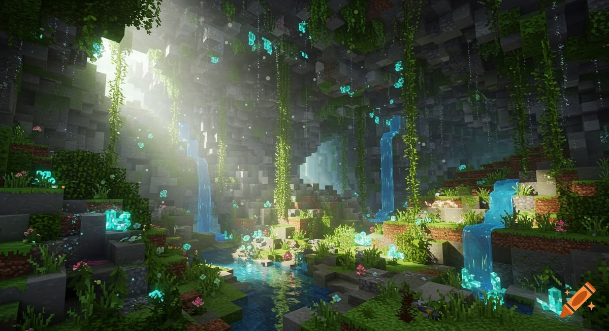
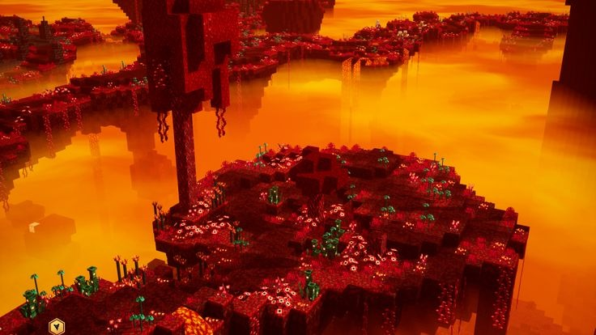
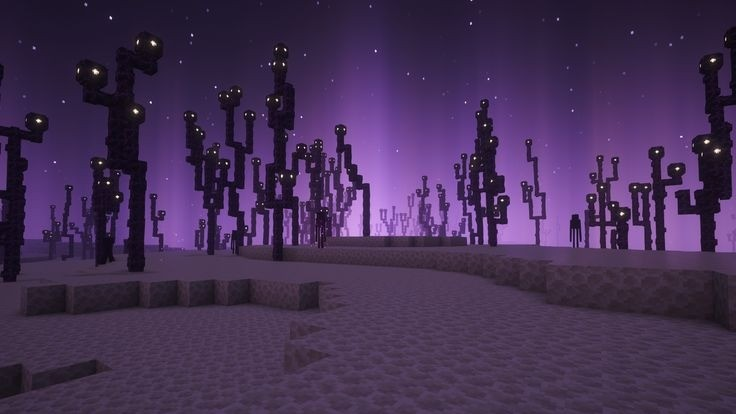
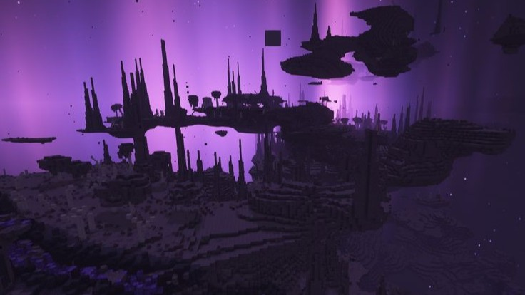

Superfície
Possui diferentes biomas, estruturas, animais, recursos e locais para explorar.
Ver maisEXPLORE NOVOS MUNDOS
O universo de Minecraft vai além da superfície. Explore diferentes dimensões, descubra ambientes únicos e conheça os desafios encontrados em cada uma delas.
Conhecer as dimensões
CONHECENDO OS MUNDOS
Minecraft é um jogo de exploração, sobrevivência e criação. Durante a jornada, os jogadores podem conhecer diferentes dimensões, cada uma com características, ambientes, criaturas e desafios próprios.
A superfície é o mundo principal e o local onde os jogadores normalmente iniciam suas aventuras. Além dela, existem o Nether e The End, que podem ser acessados por meio de portais.
Cada dimensão apresenta recursos e possibilidades diferentes, tornando a exploração uma parte importante da experiência no jogo.
PRINCIPAIS DIMENSÕES
DIMENSÃO PRINCIPAL

A superfície é o local onde o jogador normalmente nasce no Minecraft. Além de ser o mundo principal do jogo, ela possui diferentes biomas, estruturas e recursos.
MUNDO SUBTERRÂNEO
O Nether é uma dimensão caracterizada por grandes oceanos e rios de lava, fogo e ambientes perigosos.
Para acessar essa dimensão, é necessário utilizar um portal do Nether. O jogador encontra criaturas, biomas, estruturas e recursos diferentes dos existentes na superfície.


A DIMENSÃO FINAL


The End é considerada a dimensão final do Minecraft. É nela que se encontra o principal chefe do jogo, o Dragão do End.
A dimensão possui um céu escuro, grandes ilhas, pilares de obsidiana e estruturas especiais. Criaturas como os Endermen também aparecem naturalmente nesse ambiente.
Itens considerados raros, como o Élitro, podem ser encontrados apenas nessa dimensão.
The End é acessado por meio de um portal encontrado em uma fortaleza gerada na superfície. Esse portal não pode ser construído pelo jogador.
OUTROS CONCEITOS

Abaixo da rocha-mãe existe uma região conhecida como Void, ou Vazio. É um ambiente escuro onde não há estruturas ou elementos do mundo.

O Céu foi uma dimensão planejada durante o desenvolvimento do jogo, mas não foi implementado. Parte de suas ideias foi utilizada posteriormente na criação de The End.
MUITO ALÉM DA SUPERFÍCIE
As dimensões do Minecraft apresentam ambientes, criaturas, recursos e desafios diferentes. Explorar cada uma delas permite descobrir novas formas de jogar e ampliar as possibilidades do universo criado por blocos.
Conhecer os mobs